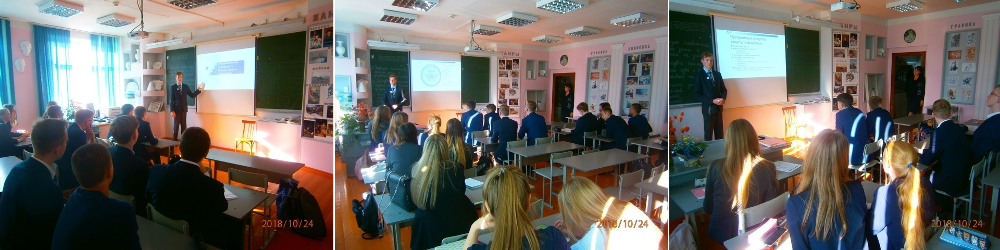

История
В рамках проведения Всероссийского фестиваля энергосбережения «#Вместе_ярче» в школе № 125 г. Барнаула 11А классом, классный руководитель Куликова Людмила Васильевна, учитель физики, было предложено неординарное решение данного вопроса. Все мы знаем из курса физики:” Ничего не возникает из ничего и не исчезает в никуда” Как бы не хотелось нам больше сэкономить электричества, нам многого не удастся достичь!
Академиком школьных наук-2018, Владиславом Кульневым, была разработана и реализована экспериментальная схема заряда батареек для лабораторных работ по физике. В ней всё очень просто: механическая работа преобразуется в ток, заряжающий батарею гальванических элементов. Тем самым можно будет восполнять потраченную энергию!
Конечно, это всё замечательно, но не в ручную же заряжать каждую батарейку? Выход есть! Обычные тренажёры, модернизированные для преобразования энергии: крутишь педали велотренажёра, поддерживаешь свою физическую форму и при этом вырабатывается ток. От такой вещи двойная польза!
27 сентября в школе № 125 г. Барнаула состоялся товарищеский баскетбольный матч между 11А и 9А в рамках акции РДШ «#Мы_за_спорт_Мы_за_ГТО». Мы видели интересную и завораживающую игру. Каждая из команд выложилась на сто процентов чтобы победить. Цель мероприятия – показать, что главное всегда и везде – это участие, которое и даёт всем нам бесценный опыт, указывает на наши недочёты.
24 октября 2018 года в школе 125 г. Барнаула в рамках празднования Дня рождения РДШ были проведены мастер-классы, на которых учащиеся познакомились с наиболее важным аспектом информационно-медийного направления — информационной безопасностью.
Интернет пространство таит в себе опасность для людей, не заботящихся о конфиденциальности своих данных. Взлом страничек в социальных сетях не ушел в прошлое, методы шифрования совершенствуются, но не отстают и хакеры, поэтому нужно хорошенько подумать, когда что-то хочешь написать.
Будьте осторожны, меняйте почаще пароли, делайте их сложными и не храните их на своих компьютерах! Это базовые правила, которые стоит помнить всегда!
